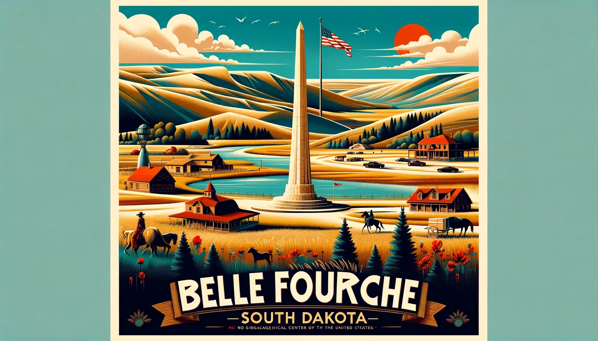
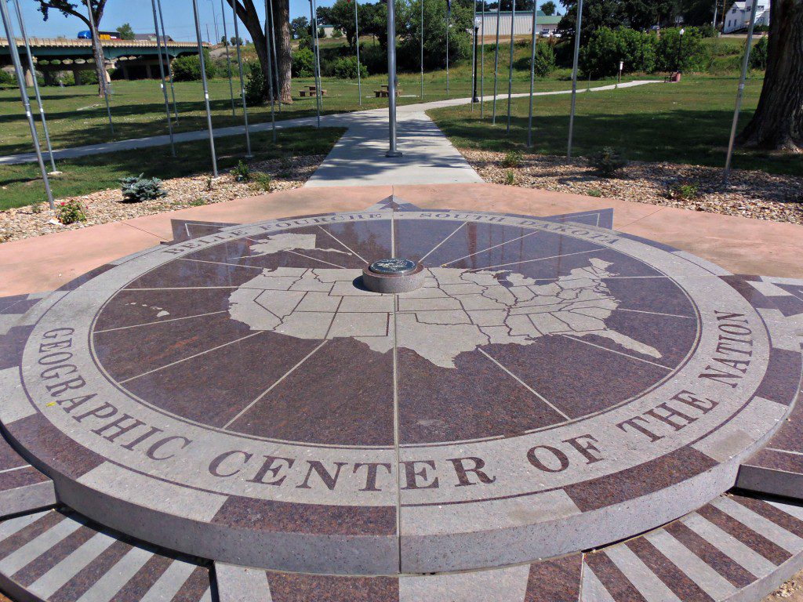

Welcome to Belle Fourche, South Dakota
Nestled in the heart of the Black Hills region, Belle Fourche is a charming town rich in history, natural beauty, and community spirit. Whether you’re looking for outdoor adventure, exploring unique local attractions, or simply soaking in the small-town atmosphere, Belle Fourche is the perfect destination.
About Belle Fourche
Belle Fourche, which means "Beautiful Fork" in French, is named after the stunning confluence of the Belle Fourche and Cheyenne Rivers. Located in the northern part of the Black Hills, this town serves as a gateway to both natural wonders and historical landmarks. With a population of approximately 5,000, Belle Fourche is the county seat of Butte County and boasts a vibrant local community. The town has deep agricultural roots and serves as a hub for ranching and farming in the region. But it’s not just about history—Belle Fourche is also modern and welcoming, offering a variety of services, parks, and events for residents and visitors alike.
Things to do in Belle Fourche
Tripadvisor
- The Geographic Center of the Nation
Belle Fourche proudly claims the title of the "Geographic Center of the Nation." In 1959, the center of the contiguous United States was officially ' marked here with a monument, making it a must-see stop for travelers. The location is marked by a scenic plaza and a sign that invites visitors to take photos and appreciate the significance of the area.
Dive into Belle Fourche’s fascinating history at the Tri-State Museum, which showcases artifacts from the area’s Native American, settler, and cowboy past. The museum features exhibits on local industries, historical figures, and the rich cultural heritage of the region. It’s the perfect spot to learn about the region's past.
- Orman Dam
Located just outside of Belle Fourche, Orman Dam is a peaceful destination perfect for fishing, picnicking, and hiking. The dam itself is an engineering marvel, offering a tranquil setting with scenic views. Whether you’re an avid fisherman or a casual visitor, this is a great place to enjoy the outdoors.
- Belle Fourche River Walk
Enjoy a relaxing stroll through the town on the Belle Fourche River Walk, a picturesque path that follows the Belle Fourche River. It’s a great way to explore the local landscape, spot wildlife, and experience the natural beauty that makes this region so special.
History of Belle Fourche
Belle Fourche’s history dates back to the late 19th century when the area was first settled by homesteaders. The town's name, which translates to "Beautiful Fork" in French, refers to the confluence of the Belle Fourche and Cheyenne Rivers, a region rich in natural beauty. Originally inhabited by Native American tribes, including the Lakota Sioux, the land became a vital hub for ranching and agriculture as settlers moved west. In 1883, the arrival of the railroad helped establish Belle Fourche as a key trading center in the region. By 1900, it had officially incorporated and quickly grew into a bustling community, thanks in part to its strategic location as a shipping point for livestock and crops. Throughout the 20th century, Belle Fourche maintained its strong agricultural roots, while also evolving with the times. Today, the town is celebrated not only for its historical significance but also as the site of the Geographic Center of the Nation, marking its place in American history as a crossroads of culture, industry, and geography.